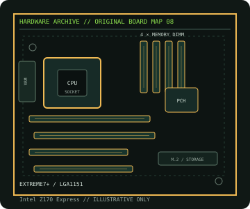

[ INDIVIDUAL COMPONENT // MOTHERBOARDS ]
ASRock Z170 Extreme7+
Intel Z170 / LGA1151 ATX platform with DDR4, four x16-length slots and three Ultra M.2 sockets. This is a dedicated model record; revision, CPU and firmware qualifications are documented below.

IDENTIFICATION: Verify the printed model and PCB revision against manufacturer support files before selecting a processor, memory kit, firmware image or replacement board. Similar names can describe electrically different products.
Specifications
| Catalog subcategory | Enthusiast Intel platforms |
|---|---|
| Exact board / revision | Z170 Extreme7+ |
| Platform / era | Intel Skylake enthusiast desktop platform, 2015 |
| CPU socket / compatibility | LGA1151; 6th-generation Intel Core, Pentium and Celeron processor support as qualified by ASRock’s model-specific CPU list and BIOS. |
| Chipset | Intel Z170 Express |
| Memory | Four dual-channel DDR4 DIMM sockets, up to 64 GB; unbuffered UDIMM support and XMP. ECC UDIMMs, where supported, operate without ECC correction. |
| Expansion slots | Four PCIe x16-length slots with distinct electrical lane widths and processor/chipset sharing, plus PCIe x1 and half-size mini-PCIe connectivity; verify exact slot wiring in the manual. |
| Form factor | ATX, approximately 305 × 244 mm; confirm case/standoff support and PCB dimensions in the manufacturer manual. |
| Storage / I/O | Ten SATA 6 Gb/s ports, SATA Express and three Ultra M.2 sockets; simultaneous use is subject to chipset/controller lane sharing. |
| Firmware and validation | Use only firmware for this exact model and revision. Confirm the selected CPU in the manufacturer CPU support table and satisfy its stated minimum BIOS; consult the board manual and memory QVL for DIMM placement, shared lanes and port limitations. |
Compatibility and revision notes
ATX (305 × 244 mm). Match the exact Extreme7+ model (not another Z170 Extreme variant), use DDR4, and consult ASRock’s CPU/BIOS list before installing a processor. The board has three M.2 sockets and multiple x16-length connectors, so the manual’s lane-sharing and population tables are essential for storage/expansion planning.
Physical socket fit, chipset family or a matching module notch does not independently guarantee compatibility. Confirm the exact CPU, BIOS release, memory type/capacity, slot wiring, device protocol and board dimensions in the manufacturer documentation before building or servicing a system.
Preservation and repair
Record the full PCB model, revision and BIOS identifier before maintenance. Inspect socket contacts, DIMM/PCIe connectors, VRM area and electrolytic components; document any corrosion, rework or missing hardware. Use ESD-safe handling and follow the manual’s clear-CMOS procedure.
For an archive record, photograph labels and connector condition before cleaning. Do not cross-flash firmware from a similar model or revision, and never power a board with loose conductive hardware beneath it.
Manufacturer sources
- ASRock — Z170 Extreme7+ specificationsOfficial manufacturer product/manual documentation for this exact model.
- ASRock — Z170 Extreme7+ manuals, BIOS and supportOfficial manufacturer CPU/firmware/support reference; confirm the board marking and revision.
Specifications and compatibility can vary with PCB revision, regional SKU, processor stepping and BIOS. Consult the linked manufacturer support material for the exact board.